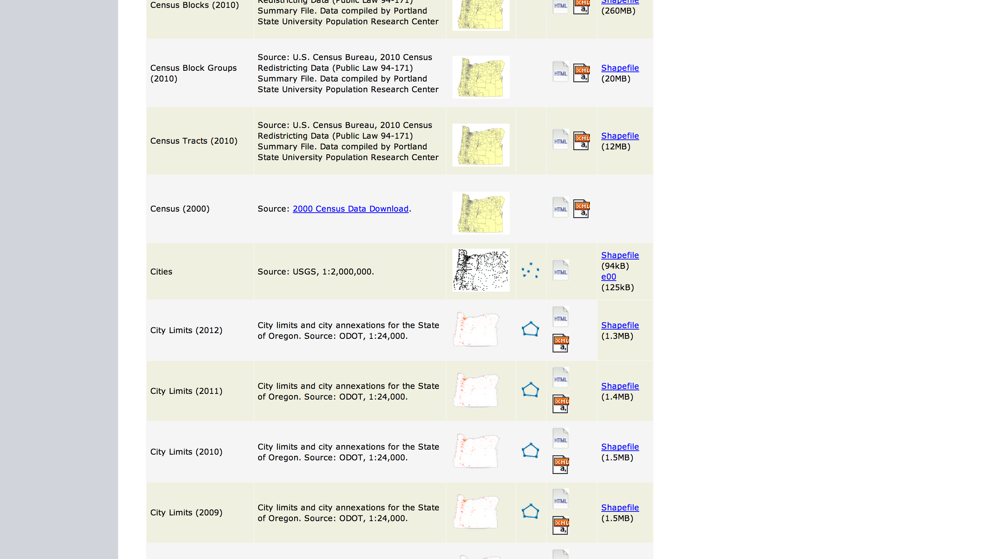
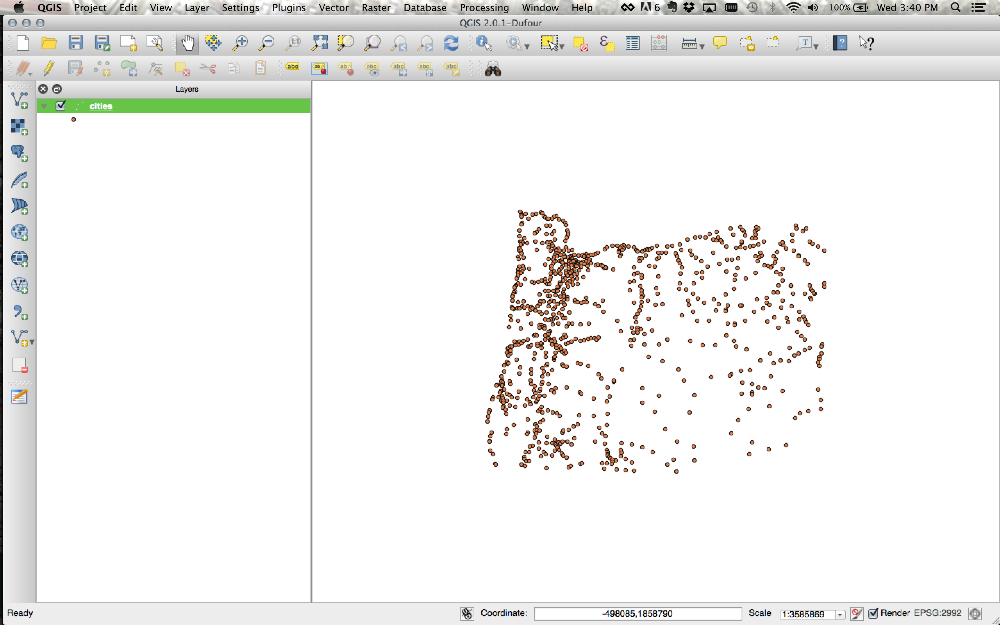
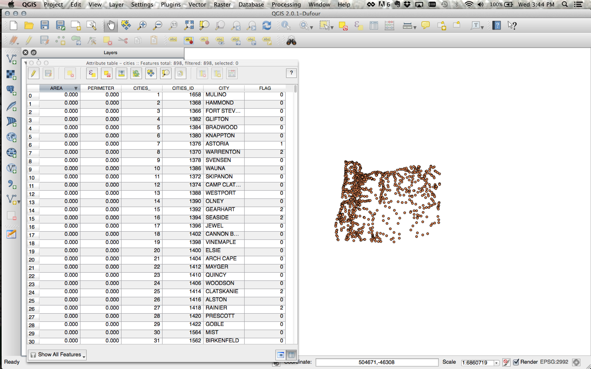
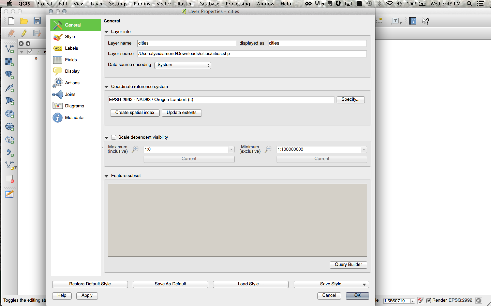

Introduction to Geographic Data Formats!
First things first: What is geographic data?
Geographic data represents things that have a location.
This can include physical things like roads, rivers, and cities.

OMG flood zones
It can also include ephemeral phenomena, like rainfall rates, 911 calls, and weather patterns.

OMG annual precipitation
Geographic data can also capture nuances of locations, like the degree of slope at a specific location on the side of a mountain.
(But we'll get to that.)
How do we use geographic data?
Typically, geographic data is used for two things: visualization and analysis.

Analysis!

Visualization!
It is often used for both!

So pretty.
There are many different types of geographic data, used by many different types of software, web tools, and libraries, for many different use cases.
Fortunately, we have many resources at our disposal to transform data from one type to another.
Let's first talk about the types of geographic data and their use cases.
Geographic data typically falls into two camps: raster data and vector data.

Rasters!

Vectors!
I am most often working with vector data, so let's start there.
One
super common geographic data format is the
shapefile.
Shapefile is actually a misnomer: the data format requires three different files to store its core data (plus some optional files).
Let's take a look at a shapefile. Head over to
http://bit.ly /orgeo and download the Cities shapefile.
http://bit.ly /orgeo
Clicking the link should have downloaded cities.zip. Extract that to a folder and take a look at the files in it.
There are two files that are unrelated to the shapefile: the PDF file and the HTML file. We can ignore those for now.
There are four other files in the folder: a dbf, a prj, a shp, and a shx.
Open up the dbf file in a text editor.

It should look something like this.
The dbf contains the attribute information for the dataset, with different values for each feature.
Now open up the prj file in a text editor.

It should look something like this.
The prj contains the projection information for the dataset.
(Projections deserve their own discussion. :-P)
We can skip the shx file. It is an index file to allow quick seeking within the file.
Ah, now to the shp file!
If you have QGIS or ArcGIS installed on your machine, open up the cities.shp file.
(If you don't, just look up here!)
This is what the data looks like.
Open the attribute table for cities.
The dbf file generates this table of information.
Check out the properties of the cities file, and take a look at the projection (or coordinate reference system).
The prj file generates the coordinate reference system / projection.
Shapefiles can be used with most desktop GIS and spatial analysis tools.
Shapefiles are not used in web maps.